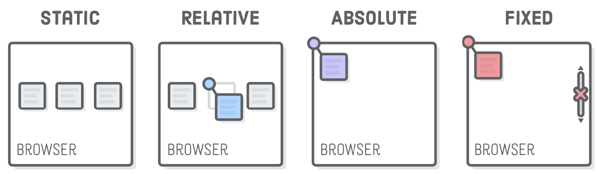

Tipos de Posiciomamiento en CSS
Cuandovamos a diseñar páginas web, tanto en HTML como en CSS, debemos tener en cuenta
una serie de propiedades que nos permitirá poder colocar los elementos según
nuestras necesidades y características requeridas.
Position consiste en una propiedad que nos va a permitir establecer la
posición deun elemento dentro de nuestra web, y que consiste exactamente en
cómo vamos a posicionar un elemento en nuestro HTML con respecto a su elemento
padre y respecto al flujo normal del documento.
Entre las propiedades que podemos usar como position tenemos las siguientes:
-
Static: Es tipo de posicionamiento denominado como normal o estático.
Es decir, el posicionamiento se establece por defecto. Como se ha dicho,
es un posicionamiento por defecto, con el que el navegador acomoda los
elementos según el flujo del mismo.
-
Relative: Es un tipo de posicionamiento denominado como relativo. En este
caso, nos permite posicionar una caja o elemento después de moverla desde su
lugar de origen (dejando su lugar vacío y sin ocupar.)
-
Absolute: Es un tipo de posicionamiento denominado como absoluto,
y cuya propiedad se caracteríza por permitir posicionar una caja o elemento
respecto a su contenedor y el resto de elementos ignoran en este caso su nueva posición,
ocupando el vacío que deja...
-
Fixed: También conocido como fijo. Nos permite posicionar una caja en donde su posición
respecto a la pantalla del usuario siempre va a ser la misma. Es decir, tiene
una posición fija.
-
Stickly: Se considera un tipo de posicionamiento híbrido entre el posicionamiento relative y fixed.
Es decir, un elemento con posición stickly es tratado como un elemento con posición relativa
hasta que cruza un umbral especificado, como puede ser un elemento "padre".
